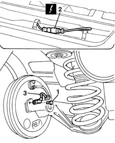

3340A44 rear wheel rpm sensors (two) r r
- Path
- Procedures > 33 BRAKING SYSTEM > 3340 A(B.S. ANTI-LOCK BRAKING SYSTEM .) > 3340A abs check/adjustment devices > 3340A44 rear wheel rpm sensors (two) r r
- Kind
- repair procedure (removal / refitting; the operation number is the code)
- Applies to
- all engines; all production periods
- Interactive page
- https://sloeber94.github.io/elrnDB-fMltpl/en/#/2891648
Applies to: all engines; all production periods
 Removing
Removing
 Refitting
Refitting7040L44 rear compartment scuff strip - r r
1. Unscrew the bolts securing the right and left rear wheel rpm sensors.
2. Disconnect the ABS wheel sensor electrical connections.
3. Remove the rpm sensors.
 | Name | Connector |
|---|---|---|
2 | Rear right wheel sensor for ABS |
| Name | Connector |
|---|---|---|
2 | Left rear wheel sensor for ABS |

Applies to: all engines; all production periods
Refitting
RemovingFit the left and right wheel rpm sensors, positioning the electrical wiring correctly.
Connect the electrical connections.
Screw in the rpm sensor bolts.
 | Fastening | Component | Ø | Value (daNm) |
|---|---|---|---|---|
- | Bolt | ABS REAR WHEEL RPM SENSOR | M6 | 0.7 |
Topics linked from this page (4)
- 4450B13 rear wheels(2) r r
- 7040L44 rear compartment scuff strip - r r
- K75 Left rear wheel sensor for ABS
- K76 Rear right wheel sensor for ABS